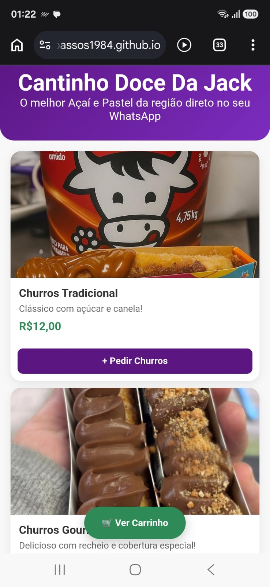
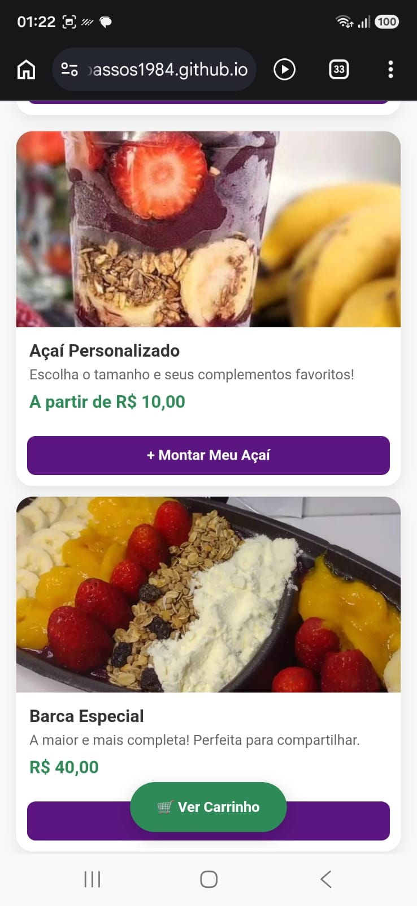
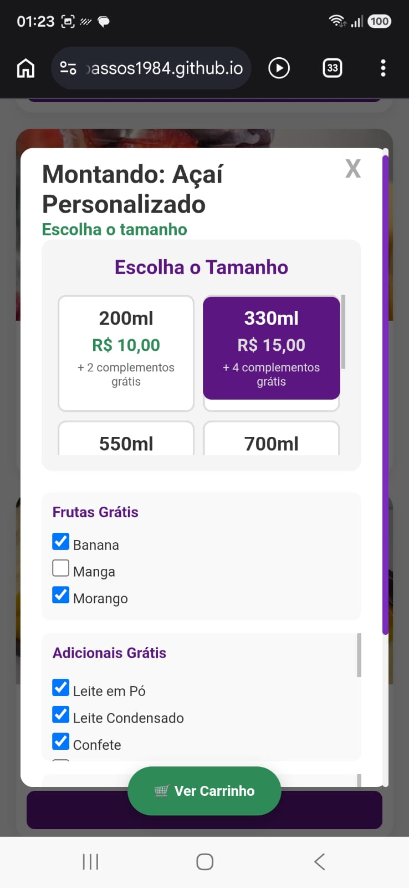

Cantinho Doce da Jack



Projeto desenvolvido para um cliente real. Cardápio digital interativo criado para automatizar pedidos de açaí via WhatsApp.
Possui uma interface responsiva inspirada em aplicativos de delivery, onde o cliente monta o pedido de forma autônoma e a loja recebe o resumo com os valores já calculados.
Tecnologias: HTML5, CSS3 e JavaScript.